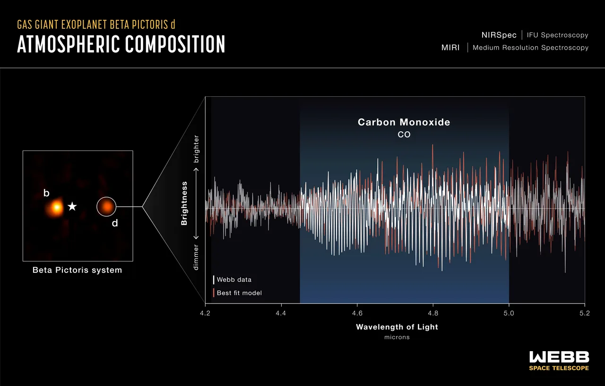

15. Juli 2026
Dritter Riesenplanet im System Beta Pictoris entdeckt
Das ungefähr 63 Lichtjahre entfernte System Beta Pictoris gehört zu den am besten untersuchten jungen Planetensystemen. Zwei Gasriesen, Beta Pictoris b und c, waren dort bereits bekannt. Im Juli 2026 meldeten zwei Teams unabhängige voneinander einen dritten Planeten. Ein Team nutzte den NIRSpec-Spektrographen des James Webb Space Telescope und konnte den Planeten anhand der chemischen Signatur von Kohlenmonoxid in seiner Atmosphäre von Hintergrundquellen unterscheiden. Ein zweites Team bildete ihn mit dem Instrument ERIS am Very Large Telescope der ESO direkt ab und fand ihn nachträglich auch in bis zu elf Jahre alten Archivaufnahmen.
Beta Pictoris d ist etwa 2,4 mal schwerer als Jupiter, umkreist seinen Stern im Abstand von rund 26 AU und leuchtet etwa hundertmal schwächer als Beta Pictoris b. Das System ist damit erst das zweite bekannte mit mindestens drei direkt abgebildeten Planeten.
Quellen: NASA: "NASA's Webb Discovers Hidden Planet in Famous Star System." Online; science.nasa.gov; 15.07.2026; ESO: "Faintest planet ever imaged from Earth found after more than 10 years of hide-and-seek." Online; eso.org; 15.07.2026